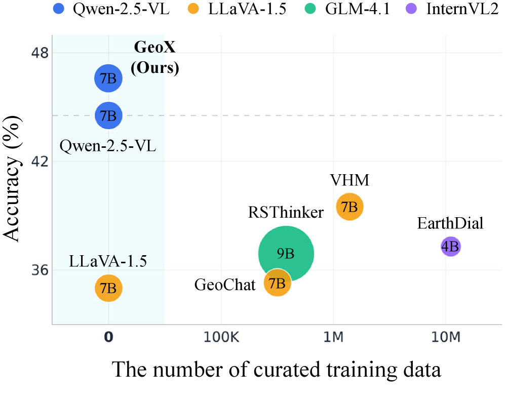
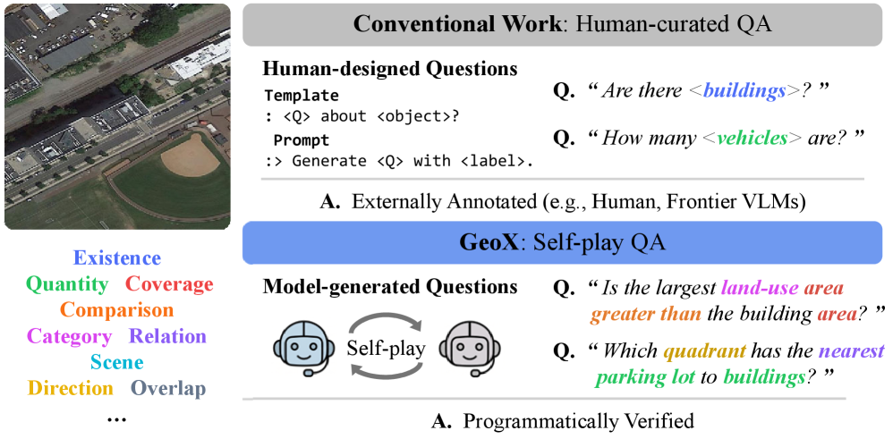
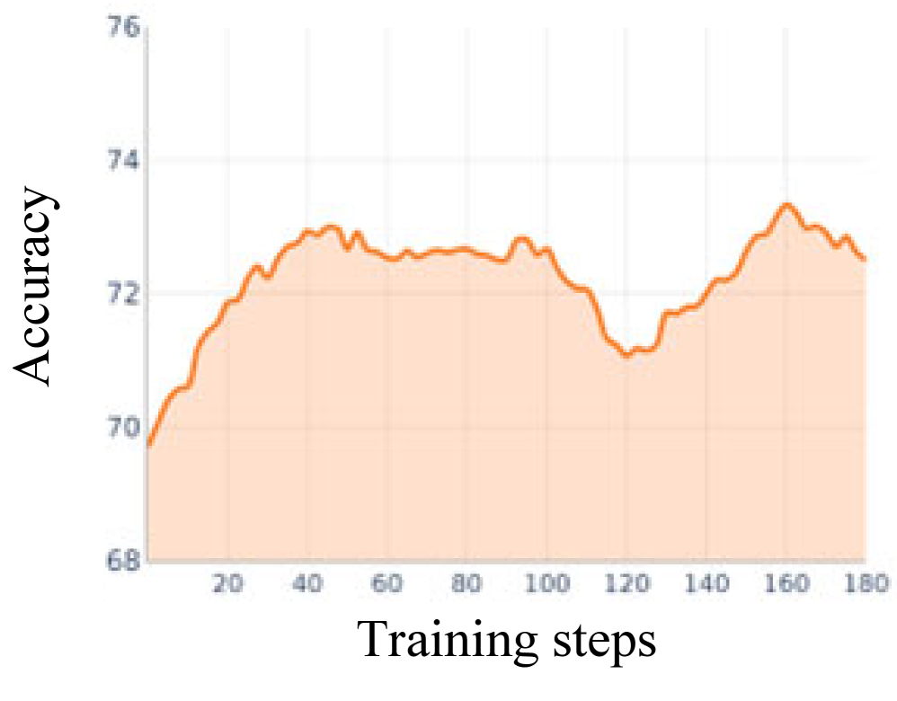

GeoX introduces a self-play framework that uses executable programs and verifiable rewards to master geospatial reasoning from unlabeled satellite imagery, eliminating the need for costly human annotation.
本文提出GeoX，一种无需人工标注数据的自我博弈框架，通过可执行程序生成可验证奖励，从而掌握地理空间推理。实验表明，该方法在遥感VQA和目标计数基准上平均提升高达5.5个点，匹配甚至超越基于百万级人工标注数据训练的基线模型。
Deep Note — geox
Key Takeaways - Self-play framework for geospatial reasoning without human-curated data. - Uses executable programs over spatial primitives to generate verifiable rewards. - Three reasoning modes (abduction, deduction, induction) provide complementary scene understanding. - Matches or exceeds baselines trained on millions of curated examples, with up to 5.5 point average improvement. - Releases a self-grown benchmark of execution-verified geospatial problems.
0) Metadata
- Title: GeoX: Mastering Geospatial Reasoning Through Self-Play and Verifiable Rewards
- Alias: geox
- Authors: Kyeongjin Ahn, Seungeon Lee, Krishna P. Gummadi, Meeyoung Cha
- arXiv ID: 2605.20006
- Published:
- Links:
- Abs: https://arxiv.org/abs/2605.20006
- HTML: https://arxiv.org/html/2605.20006v1
- PDF: https://arxiv.org/pdf/2605.20006
- Tags: geospatial-reasoning, self-play, verifiable-rewards, remote-sensing, reinforcement-learning
- Domains: system_safety
- Rating: 4/5 (base 1 + quality 2 + observation 1)
1) Why-read
GeoX introduces a self-play framework that uses executable programs and verifiable rewards to master geospatial reasoning from unlabeled satellite imagery, eliminating the need for costly human annotation.
2) CRGP
C — Context
Geospatial reasoning from satellite and aerial imagery is critical for urban planning, environmental monitoring, and disaster response. Existing vision-language models (VLMs) for remote sensing rely on fine-tuning over human-curated question-answer pairs, which cannot cover the combinatorial space of spatial queries. This annotation bottleneck limits model generalization and scalability.
R — Related work
- Remote sensing VLMs (e.g., GeoChat, RSGPT) fine-tuned on human-curated QA pairs.
- Self-play methods in language models (e.g., SPIN, ReST) for iterative self-improvement.
- Reinforcement learning with verifiable rewards (RLVR) for math and code tasks.
- Programmatic supervision for spatial reasoning (e.g., ViperGPT, VisProg).
G — Gap
The combinatorial explosion of possible spatial questions in overhead imagery makes exhaustive human annotation infeasible. Existing datasets cover only a small fraction of this space, and models trained on them are bounded by the scope of curation. There is no prior work that autonomously generates and solves geospatial reasoning problems without any curated data.
P — Proposal
GeoX employs a single multimodal policy that alternates between a proposer (generating executable spatial problems) and a solver (answering them under abduction, deduction, and induction modes). A verifier executes the program to produce a reward signal that jointly optimizes both roles via reinforcement learning, grounding learning in the spatial structure of the image itself.
---
4) Experiments
Main results
GeoX improves base VLMs by up to 5.5 points on average across remote sensing VQA and object counting benchmarks, matching or exceeding conventional baselines trained on millions of curated data points. Largest gains are on counting and spatial relation tasks.
Ablation
Ablation studies show that all three reasoning modes (abduction, deduction, induction) contribute positively, with the full model outperforming any single-mode variant by 2-3 points on average. The self-play training loop is critical; removing it drops performance by 4+ points.
Limitations
['Relies on a predefined set of spatial primitives and an open-vocabulary segmenter, which may limit the types of problems that can be expressed.', 'The self-play process may generate redundant or trivial problems, requiring careful reward shaping to maintain difficulty.', 'Evaluation is limited to static imagery; temporal or multi-view reasoning is not addressed.']
5) Why it matters
- Demonstrates that complex spatial reasoning can be learned without any human annotation, which is directly relevant to your work on reducing data curation costs.
- The use of executable programs as a reward signal provides a principled way to ground learning in physical scene structure, aligning with your interest in verifiable AI.
- The three reasoning modes offer a template for teaching models to reason about causality and compositionality, which could be adapted to other domains.
6) Next steps
- [ ] Explore extending GeoX to temporal sequences or multi-view satellite imagery for change detection and 3D reasoning.
- [ ] Investigate whether the self-play framework can be applied to other structured reasoning domains (e.g., diagrams, floor plans).
- [ ] Analyze the diversity and difficulty distribution of self-generated problems to improve curriculum learning.
- [ ] Combine GeoX with large language models for natural language question generation and grounding.
7) Scoring
4/5 = base 1 + quality 2 + observation 1
GeoX：通过自我博弈与可验证奖励掌握地理空间推理
主要结论 - 提出无需人工数据的自我博弈框架，用于地理空间推理。 - 利用空间原语上的可执行程序生成可验证奖励。 - 三种推理模式（溯因、演绎、归纳）提供互补的场景理解。 - 在多个基准上平均提升高达5.5个点，匹配或超越百万级标注数据训练的基线。 - 发布一个经过执行验证的地理空间问题自生长基准。
1) 阅读理由
GeoX提出了一种自我博弈框架，利用可执行程序和可验证奖励从无标注卫星图像中掌握地理空间推理，消除了昂贵的人工标注需求。
2) CRGP（背景 / 相关工作 / 差距 / 方案）
背景：从卫星和航空图像进行地理空间推理对城市规划、环境监测和灾害响应至关重要。现有的遥感视觉语言模型（VLM）依赖于人工策划的问答对进行微调，无法覆盖空间查询的组合空间，这种标注瓶颈限制了模型的泛化能力和可扩展性。
相关工作：遥感VLM（如GeoChat、RSGPT）在人工策划的QA对上微调；语言模型中的自我博弈方法（如SPIN、ReST）用于迭代自我改进；基于可验证奖励的强化学习（RLVR）用于数学和代码任务；程序化监督用于空间推理（如ViperGPT、VisProg）。
差距：航拍图像中可能的空间问题呈组合爆炸，使得穷举人工标注不可行。现有数据集仅覆盖这一空间的一小部分，训练出的模型受限于策划范围。目前尚无工作能在没有策划数据的情况下自主生成并解决地理空间推理问题。
方案：GeoX采用单一多模态策略，交替扮演提议者（生成可执行空间问题）和求解者（以溯因、演绎、归纳三种模式回答问题）。验证器执行程序产生奖励信号，通过强化学习联合优化两个角色，使学习扎根于图像本身的空间结构。
3) 实验
GeoX在遥感VQA和目标计数基准上，将基础VLM平均提升高达5.5个点，匹配或超越基于百万级人工标注数据训练的常规基线。最大提升出现在计数和空间关系任务上。
消融实验
消融研究表明，所有三种推理模式（溯因、演绎、归纳）均有正面贡献，完整模型平均比任何单模式变体高出2-3个点。自我博弈训练循环至关重要，移除后性能下降4个点以上。
局限性
['依赖于预定义的空间原语集和开放词汇分割器，可能限制可表达的问题类型。', '自我博弈过程可能生成冗余或琐碎的问题，需要精心设计奖励塑造以维持难度。', '评估仅限于静态图像，未涉及时间或多视角推理。']
4) 重要性
- 证明了无需任何人工标注即可学习复杂空间推理，直接关联到降低数据策划成本的工作。
- 使用可执行程序作为奖励信号，为将学习扎根于物理场景结构提供了原则性方法，与可验证AI的兴趣一致。
- 三种推理模式为教授模型因果性和组合性推理提供了模板，可适配到其他领域。
5) 下一步
- [ ] 探索将GeoX扩展到时间序列或多视角卫星图像，用于变化检测和3D推理。
- [ ] 研究自我博弈框架是否可应用于其他结构化推理领域（如图表、平面图）。
- [ ] 分析自生成问题的多样性和难度分布，以改进课程学习。
- [ ] 将GeoX与大语言模型结合，用于自然语言问题生成和 grounding。
![Figure 2 : Method overview. A single multimodal policy π θ \pi_{\theta} alternates between a proposer (middle) and a solver (right) that share a call interface (left) of spatial primitives ℱ \mathcal{F} and tools 𝒯 \mathcal{T} (instantiated here with an open-vocabulary segmenter; greyed entries left for future work).
Conditioned on image I I , the proposer construct a problem by composing calls into an executable program p p paired with an argument a a , forming ( p , a , o ) (p,a,o) with o = p ( a ; I ) o=p(a;\,I) .
The solver then recovers a masked element of the problem under three reasoning modes: abduction infers a ^ \hat{a} , deduction predicts o ^ \hat{o} , and induction synthesizes p ^ \hat{p} .
The verifier calculates a proposer reward for problem learnability and a solver reward for answer correctness, which jointly update π θ \pi_{\theta} .](figures/1165/fig_004.png)



